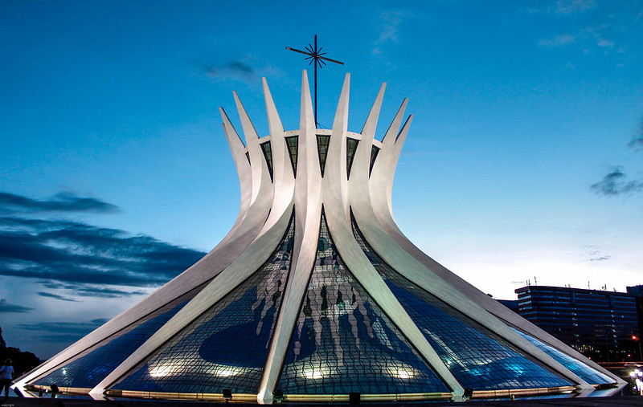

Catedral Metropolitana de Brasília - Obra-prima de Oscar Niemeyer
| Brasília em Números | |
|---|---|
| Data de Fundação | 21 de Abril de 1960 |
| Arquiteto | Oscar Niemeyer |
| Patrimônio Cultural | UNESCO desde 1987 |
Marco da Arquitetura Moderna
Brasília é um símbolo da arquitetura moderna e do planejamento urbano do século XX. Sua concepção foi um marco na história da arquitetura mundial, com seus edifícios icônicos e traçado urbanístico inovador.
Principais Atrações
- CN - Símbolo do poder legislativo
- Palácio do Planalto - Sede do poder executivo
- Supremo Tribunal Federal - Sede do poder judiciário
| Edifício | Arquiteto | Ano de Construção |
|---|---|---|
| Catedral Metropolitana | Oscar Niemeyer | 1970 |
| Palácio da Alvorada | Oscar Niemeyer | 1958 |
| Memorial JK | Oscar Niemeyer | 1981 |
Saiba Mais
Conheça mais sobre a história e arquitetura de Brasília: